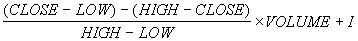

Accumulation/Distribution is a momentum indicator which takes into account changes in price and volume together. The idea is that a change in price coupled with an increase in volume may help to confirm market momentum in the direction of the price move.
Note the similarity of this formula to that of the stochastic; this is basically a stochastic multiplied by volume. This means that if the security closes to its high, the volume multiplier will be greater than if the security closes nearer to its low.
If the Accumulation/Distribution indicator is moving up, the buyers are driving the price move and the security is being accumulated. A decreasing A/D value implies that the sellers are driving the market and the security is being distributed. If divergence occurs between the Accumulation/Distribution indicator and the price of the security, a change in price direction is probable.
The Accumulation/Distribution Line formula is as follows:

Where I is yesterday's Accumulation/Distribution value.